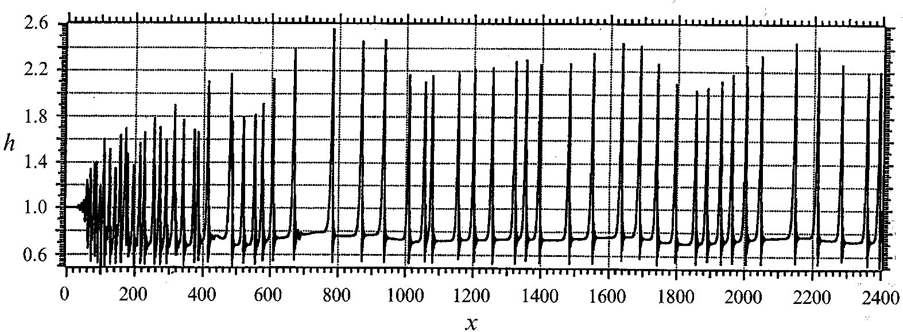
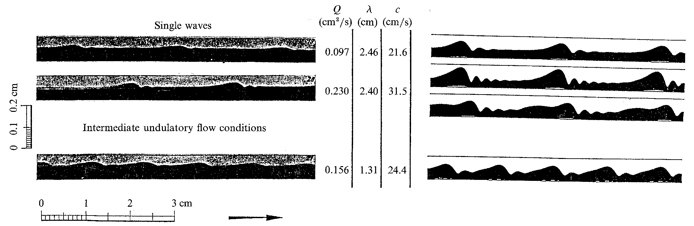
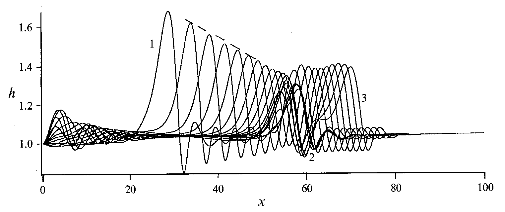
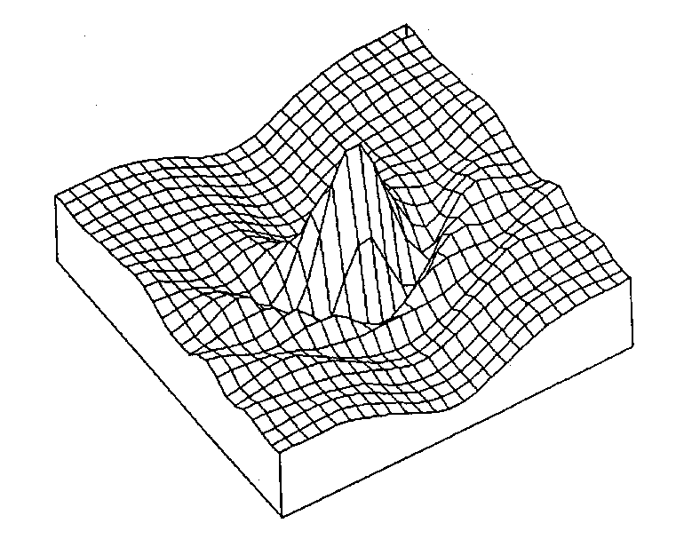

Wave Dynamics on a Falling Film
Falling film is an excellent prototype for open-flow extended-domain systems that are convectively unstable, such that inlet noise is convected into the flow channel and triggers complex spatio-temporal evolution. Typical downstream spatio-temporal patterns and the key mechanisms behind their transitions are examined here for the falling film. A generic wave evolution sequence is found for large Kapitsa numbers and moderate Reynolds numbers (5< R<100). The extent this sequence is completed depends on the noise amplitude and the channel length but is practically independent of the noise statistics.

Snapshot of the evolving waves from a numerical simulation of the averaged equation at d =0.217. Random forcing is placed at the inlet and a 'soft' boundary condition is placed at the exit to minimize upstream feedback from there.
Using a Fourier-Laplace transform theory for convective
instability, inlet white noise of a falling film is shown to be filtered downstream into wave-packets with a specific
low modulation frequency. The power spectral density hence exhibits two
dominant frequencies connected with the fastest growing mode from the primary
instability and the
the secondary instability of the least unstable finite-amplitude periodic
wave. The latter is deciphered from a Floquet analysis of the quasi-stationary
periodic waves.
Further nonlinear wave-packet dynamics of quasi-saturated waves are dominated by a coarse-grain translational mode for wave node conservation and a Galilean mass conservation mode corresponding to the local average film height. Such dynamics are described by two coupled nonlinear first-order PDE's and is driven physically by a side-band instability due to a coupling between wave modes of the two dominant frequencies. Eventually, this ill-posed elliptic Cauchy problem leads to self-similar finite-time blow-up solutions. These singularities represent wave sinks at the modulation minima that coalesce nearby waves into larger and localized wave structures called solitary pulses. Subsequent wave dynamics are dominated by these coherent structures.

Comparison with the photographs of Kapitza.
The first pulses formed at the modulation minima are larger and faster than the pulses form subsequently. An irreversible coalescence between these large defect pulses and their smaller front neighbors is the key mechanism that drives the observed pulse coarsening dynamics. The binary interaction precipitates cascaded coalescences downstream to reduce the pulse density linearly with distance . This downstream coarsening rate is captured with a statistical theory that exploits the self-similarity of the pulse solution with respect to affine scalings in substrate thickness and amplitude and with a weighted spectral theory for pulses. The weighted spectral theory allows us to collapse the continuum of essential modes of the pulse into a single discrete resonance pole. Two-dimensional pulse dynamics cease when an equilibrium average pulse separation is reached such that an excited pulse formed after a coalescence event cannot capture its neighbor to perpetuate the coalescence. Using the resonance pole spectral theory to estimate the liquid drainage rate from the excited pulse, we are able to determine this equilibrium separation.

A different depicition of the interaction that leads to coalescence. Note the linear decay of the excited back pulse. Pulse 1 is the initial excited pulse 2 the initial stationary pulse. Pulse 3 is the coalesced pulse.
The equilibrated two-dimensional localized coherent structures are robust
against 2D-disturbances but a Rayleigh 3D-instability causes the formation of
three-dimensional localized coherent structures called "scallop waves". With
the description of the dynamics of these 3D-solitons, we complete the theories
for all wave regimes and their transitions of this classical hydrodynamic instability.
The results are summarized in our new book by Elsevier Science shown below.

A two-dimensional solitary wave.
Book: "Complex Wave Dynamics on thin Films", Elsevier Science (2002)